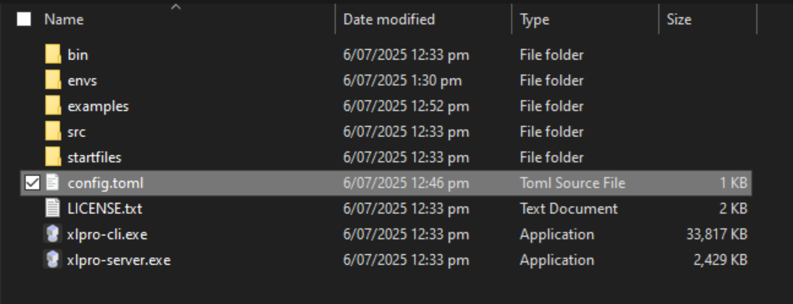
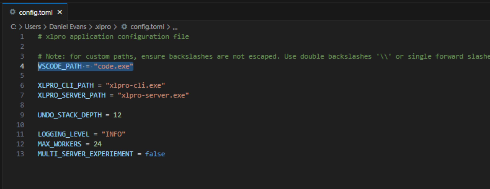

Getting Started
UDF Capability Demo
A demo showing the capabilities of Python functions accessible directly from Excel cell formulas.
Quick preview video below (no sound, yet...)
Prerequisites
xlpro is designed to be installed at the user level. No admin rights necessary. Check if you meet the following requirements:
- Windows 10/11
- Excel 365 or Excel 2021+
- Visual Studio Code
- Permission to run VBA macros at your company
Installation
xlpro installs at the user level without the need for admin permissions. Perform the following steps to properly install and configure xlpro.
- Download and run the installer
- Restart your PC for the changes to take effect
- Open Excel and you will see the
xlproribbon is installed - Confirm the access to the VBA Object model is enabled
- Confirm the configuration of
VSCODE_PATHis correct
The Ribbon
After successful installation, the xlpro ribbon will appear in Excel. The ribbon is used to control the xlpro desktop application and the main interface for the end-user.

The primary workflow for xlpro from Excel is:
Initialize(or reinitialize) the workbookStartthe calculation serverDevelopthe code in VSCodeSyncyour code to the server when it changesPushyour environment configuration to the serverDistributeyour project

Initialize
Pressing the initialize button opens a prompt to configure the initalization. This achieves one of the following:
- Configures the active workbook as a new xlpro project.
- Configures a matching Python environment for a pre-configured project.
Start
Pressing the start button will start a new xlpro Python server for the active initialized workbook. Use this for the following:
- To start the project
- If your Python environment changes, e.g. via
pip install - If you need a hard reset of the calculation server, e.g. server crash
Edit
Pressing the edit button will open the xlpro project folder in VSCode as defined in the VSCODE_PATH configuration.
Note that VSCode debugging is supported natively, see the Debugging Guide for more information.
Sync
Pressing the sync button performs a soft-reset of an already running calculation server. Use this button to wipe the calculation cache or to re-load your Python files.
Push
Pressing the push button pushes the current state of the Python interpreter to the server xlpro location.
For example if you pip install a custom package, you would push the new interpreter state to reflect the necessary environment to run the workbook.
Distribute
xlpro operates by placing all code and configuration files in an adjacent folder to the workbook. E.g. book1.xlsx will have a book1.xlsx.xlpro/ folder.
This folder contains all necessary information for someone else to recreate your Python environment in one click. Simply share the workbook and folder together.
Configuration
xlpro's desktop application configuration is stored in a config.toml file in the installation directory.
Configuration settings can be found in the drop-down shown.

Press the Edit Global Config button in the Excel ribbon to open the %USERPROFILE%/.xlpro/config.toml file.

VSC Path Manual Configuration
If the user has not added code.exe to PATH, it will be necessary to manually point xlpro to the VSCode executable in the config.

I.e. if you see the following error when entering code.exe into a command prompt:
C:\Users\user.name>code.exe
'code.exe' is not recognized as an internal or external command,
operable program or batch file.
...you will need manual configuration. See below.
# Default (assumes code.exe is in your PATH)
VSCODE_PATH = "code.exe"
# Custom (use this if the above is not configured in your PATH)
VSCODE_PATH = "path/to/code.exe"
Trust Access to the VBA Object Model
xlpro dynamically generates VBA to access Python functions using VBA user-defined functions. This requires access to the VBA Object Model to add the generated VBA. Follow these steps to trust VBA model access.
- Start Excel
- Open a workbook
- Click
File>Options - Navigate to the
Trust Centertab - Click
Trust Center Settings... - Navigate to the
Macro Settingstab - Check the box
Trust access to the VBA project object model